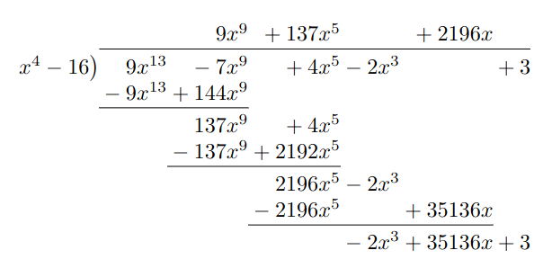

Quotient Ring
If \( I \) is an ideal in a ring \( \left( R, \oplus, \otimes \right) \), then \( \left( R / I, \boxplus, \boxtimes \right) \) is called the quotient ring of \( R \) modulo \( I \)
Natural Map
Suppose that \( R \) is a crone and that \( I \) is an ideal in \( R \), then we say that \( \pi : R \to R / I \) is the map
\[
\pi \left( r \right) := r \boldsymbol{+} I
\]
The Natural Map is a Surjective Group Homomorphism
As per title.
Quotient Ring Mod a Polynomial
Let \( f \left( x \right) \in F \left[ x \right] \) have degree \( n \) then
\[
F \left[ x \right] / \left( f \left( x \right) \right) _ \diamond = \left\{ p \left( x \right) : \operatorname{ deg } \left( p \left( x \right) \right) \lt n, p \left( x \right) \in F \left[ x \right] \right\}
\]
Quotient Ring of Polynomial is Same as Its Remainder
Suppose \( p \left( x \right) \in F \left[ x \right] \) has degree \( n \) and let \( I := \left( p \left( x \right) \right) _ \diamond \). Suppose that \( f \left( x \right) := q \left( x \right) p \left( x \right) + r \left( x \right) \in F \left[ X \right] \), where \( \operatorname{ deg } \left( r \left( x \right) \right) \lt n \), then
\[
f \left( x \right) \boldsymbol{+} I = r \left( x \right) \boldsymbol{+} I
\]
Integers Modulo N Equals the Quotient Ring of Z modulo n
We claim that \( \left( \mathbb{ Z } _ n ^ \%, \oplus, \otimes \right) = \left( \mathbb{ Z } / \left( n \right) _ \diamond , \boxplus, \boxtimes \right) \) (stronger than isomorphic)
Let \( n \in \mathbb{ N } _ 1 \), recall that \( \left( n \right) _ \diamond = \mathbb{ Z } n \) and by definition we know that \( \mathbb{ Z } n = \left\{ k n : k \in \mathbb{ Z } \right\} \), which we can think of as all multiples of \( n \). Now then \( \mathbb{ Z } / \left( n \right) _ \diamond = \left\{ s + \left( a \right) _ \diamond : s \in \mathbb{ Z } \right\} \), for some fixed \( s \in \mathbb{ Z } \) we can see that \( s + \left( n \right) _ \diamond = \left\{ s + k \cdot n : k \in \mathbb{ Z } \right\} \)
We'll start by showing that the two sets are equal, so let \( X \in \mathbb{ Z } / \left( n \right) _ \diamond \) then \( X = \left\{ s + k n : k \in \mathbb{ Z } \right\} \) for some \( s \in \mathbb{ Z } \), now consider the equivalence class \( \overline{ s } \), it is defined as all elements in \( \mathbb{ Z } \) who all share the same remainder as \( s \) upon division by \( n \), as previously seen it turns out that this set is equal to \( \left\{ s + k n : k \in \mathbb{ Z } \right\} \) but this is exactly \( X \), as needed.
Now suppose that we have some \( \overline{ k } \in \mathbb{ Z } _ n ^ \% \), as just discussed we know that \( \overline{ k } = \left\{ k + jn : n \in \mathbb{ Z } \right\} \) which is the coset \( s + \left( n \right) _ \diamond \in \mathbb{ Z } / \left( n \right) _ \diamond \). Thus at this point we concluded that as sets, we have \( \mathbb{ Z } _ n ^ \% = \mathbb{ Z } // \left( n \right) _ \diamond \)
Suppose that \( \overline{ a } , \overline{ b } \in \mathbb{ Z } _ n ^ \% \) then \( \overline{a} \oplus \overline{ b } = \overline{ a + b } \), but at the same time \( \overline{ a } = a + \left( n \right) _ \diamond \) and \( \overline{ b } = b + \left( n \right) _ \diamond \) and we have \( \left( a + \left( n \right) _ \diamond \right) \boxplus \left( b + \left( n \right) _ \diamond \right) = \left( \left( a + b \right) + \left( n \right) _ \diamond \right) \) which shows us that their addition operations are the same because \( \overline{ a + b } = \left( a + b \right) + \left( n \right) _ \diamond \), it's similarly noted that their multiplications are the same by replacing respective plusses with the times symbol.
Therefore given these two rings, both of their sets are equal and their operations are equal, so they are actually the same ring.
Modulo Integer Polynomial
Let \( x ^ 4 - 16 \in \mathbb{ Z } \left[ x \right] \)
- Find a polynomial with degree \( \le 3 \) that is congruent to \( 9 x ^ 13 - 7 x ^ 9 + 4 x ^ 5 - 2 x ^ 3 + 3 \) modulo \( x ^ 4 - 16 \)
-
Prove that \( x - 2 + \left( x ^ 4 - 16 \right) _ \diamond \) and \( x + 2 + \left( x ^ 4 - 16 \right) _ \diamond \) are zero divisors in \( \mathbb{ Z } \left[ x \right] / \left( x ^ 4 - 16 \right) _ \diamond \)
To find a polynomial with the same remainder we first do things via long division:

Therefore the polynomial \( - 2 x ^ 3 - 35136x + 3 \) is congruent modulo \( x ^ 4 - 16 \), because they both have the same remainder upon division by \( x ^ 4 - 16 \) .
Recall the definition of a zero divisor, note that \( 0 \) in this quotient ring is simply the polynomial with all coefficients set to \( 0 \in \mathbb{ Z } \), therefore we can clearly see that \( x - 2, x + 2 \) have at least one non-zero coefficient therefore they cannot be zero elements. Now at the same time we can factor \( x ^ 4 - 16 = \left( x ^ 2 - 4 \right) \left( x ^ 2 + 4 \right) = \left( x - 2 \right) \left( x + 2 \right) \left( x ^ 2 + 4 \right) \). We get two equations from this : \( \left( x - 2 \right) \left( x ^ 3 + 2 x ^ 2 + 4x + 8 \right) \) and \( \left( x + 2 \right) \left( x ^ 3 - 2x ^ 2 + 4 x - 8 \right) \), since we can verify that \( x ^ 3 - 2 x ^ 2 + 4 x - 8 , x ^ 3 + 2 x ^ 2 + 4 x + 8 \) are both non-zero polynomials,
then so far we can conclude that \( x - 2, x + 2 \)
Now notice that \( x ^ 4 - 16 + \left( x ^ 4 - 16 \right) _ \diamond = 0 + \left( x ^ 4 - 16 \right) _ \diamond \). For convience set \( I = \left( x ^ 4 - 16 \right) _ \diamond \) So then we have that \( \left[ x - 2 + I \right] \left[ x ^ 3 + 2 x ^ 2+ 4 x + 8 + I \right] = x ^ 4 - 16 + I = 0 + I \) and also that \( \left[ x + 2 + I \right] \left[ x ^ 3 - 2 x ^ 2 + 4x - 8 + I \right] = 0 + I \)
Let \( f \left( x \right) = x ^ 5 - 3 x ^ 4 + 2 x ^ 2 + 1 \) and \( g \left( x \right) = x ^ 2 - x - 3 \)
- Find the gcd of \( f \left( x \right) \) and \( g \left( x \right) \) as elements of \( \mathbb{ Q } \left[ x \right] \) and express it as a linear combination of \( f \left( x \right) \) and \( g \left( x \right) \)
- Do the same in \( \mathbb{ Z } _ 5 ^ \% \left[ x \right] \)
We start by finding the gcd in \( \mathbb{ Q } \left[ x \right] \) by using the euclidean algorithm:
Therefore we conclude that \( x ^ 5 - 3 x ^ 4 + 2 x ^ 2 + 1 = \left( x ^ 2 - x - 3 \right) \left( x ^ 3 - x ^ 2 + x - 3 \right) - 8 \), therefore we know that their gcd is one, we can express the linear combination as
\[
\left( 1 \right) f \left( x \right) + g \left( x \right) \left( x ^ 3 - x ^ 2 + x - 3 \right) = -8
\]
Now we do the same in \( \mathbb{ Z } _ 5 ^ \% \left[ x \right] \), but since in the above long division we never used any inverses, or elements that cannot be represented in \( \mathbb{ Z } _ 5 ^ \% \) (we can see 6 as 1 here), then we get the same answer, but we can re-write \( \overline{ - 8 } \) as \( 2 \), so we
\[
\left( 1 \right) f \left( x \right) + g \left( x \right) \left( x ^ 3 - x ^ 2 + x - 3 \right) = 2
\]
Crone Homomorphism induces an Isomorphism to its Image
If \( \phi : R \to S \) is a crone homomorphism with \( \operatorname{ ker } \left( \phi \right) = I \), then there is an isomorphism \( \chi : R / I \to \operatorname{ im } \left( \phi \right) \) defined as
\[
\chi \left( r \boldsymbol{+} I \right) = \phi \left( r \right)
\]
Isomorphic Rings
Show that the rings \( \mathbb{ Z } _ 3 ^ \% \left( i \right) \) and \( \mathbb{ Z } _ 3 ^ \% \left[ x \right] / \left( x ^ 2 + 1 \right) _ \diamond \) are isomorphic
Consider the map \( \phi : \mathbb{ Z } _ 3 ^ \% \left[ x \right] \to \mathbb{ Z } _ 3 ^ \% \left( i \right) \) defined by \( \phi \left( p \left( x \right) \right) = p \left( i \right) \), note that the domain is correct because for any \( n \in \mathbb{ N } _ 0 \), \( i ^ n \in \left\{ 1, -1, i, -i \right\} \) so therefore \( p \left( i \right) = c + di \) for some \( c, d \in \mathbb{ Z } _ 3 ^ \% \). Moreover see that it is a homomorphism quite easily by verifying multiplication, addition and that clearly it maps \( 1 \) to \( 1 \).
Additionally this map is surjective because given any \( a + bi \in \mathbb{ Z } _ 3 ^ \% \left( i \right) \) we see that the polynomial \( a + b x \) will map to it under \( \phi \), this means that \( \operatorname{ im } \left( \phi \right) := \phi \left( \mathbb{ Z } _ 3 ^ \% \left[ x \right] \right) = \mathbb{ Z } _ 3 ^ \% \left( i \right) \), with that knowledge therefore we have that
\[
\mathbb{ Z } _ 3 ^ \% \left[ x \right] / \operatorname{ ker } \left( \phi \right) \cong \mathbb{ Z } _ 3 ^ \% \left( i \right)
\]
We'll now prove that \( \operatorname{ ker } \left( \phi \right) = \left( x ^ 2 + 1 \right) _ \diamond \). Starting with \( \supseteq \) recall that \( \left( x ^ 2 + 1 \right) _ \diamond \) are all the multiples of \( x ^ 2 + 1 \), moreover \( \phi \left( x ^ 2 + 1 \right) = 1 + \left( i \right) ^ 2 = 0 \) therefore \( x ^ 2 + 1 \in \operatorname{ ker } \left( \phi \right) \), since any element of \( \left( x ^ 2 + 1 \right) _ \diamond \) is a multiple of \( x ^ 2 + 1 \) then by taking an arbitrary element from it, it must be of the form \( m \left( x \right) \cdot \left( x ^ 2 + 1 \right) \) where \( m \left( x \right) \in \mathbb{ Z } _ 3 ^ \% \left[ x \right] \) but since \( \phi \) is a homomorphism, then we know that \( \phi \left( m \left( x \right) \left( x ^ 2 + 1 \right) \right) = \phi \left( m \left( x \right) \right) \phi \left( x ^ 2 + 1 \right) = 0 \), thus \( \left( x ^ 2 + 1 \right) _ \diamond \subseteq \operatorname{ ker } \left( \phi \right) \).
Now approaching the other inclusion we suppose we have some \( p \left( x \right) \in \operatorname{ ker } \left( \phi \right) \), clearly if \( p \left( x \right) = 0 \) tne \( \phi \left( phi \left( x \right) \right) = 0 \) on the other hand if \( p \left( x \right) \) is a constant other than zero, then also \( \phi \left( p \left( x \right) \right) \neq 0 \) therefore we may assume that \( p \left( x \right) \) is non-constant, in such a case we know that either \( \gcd \left( p \left( x \right) , x ^ 2 + 1 \right) = 1 \) or that \( \left( x ^ 2 + 1 \right) \mid p \left( x \right) \).
Suppose that \( \gcd \left( p \left( x \right) , x ^ 2 + 1 \right) = 1 \) therefore we get polynomials \( a \left( x \right) , b \left( x \right) \) such that \( 1 = a \left( x \right) g \left( x \right) + b \left( x \right) \left( x ^ 2 + 1 \right) \) but then \( 1 = \phi \left( 1 \right) = \phi \left( a \left( x \right) \right) \cdot 0 + \phi \left( b \left( x \right) \right) \cdot 0 = 0 \) which is a contradiction, and therefore we must have that \( \left( x ^ 2 + 1 \right) \mid p \left( x \right) \) so that \( p \left( x \right) \) is a multiple of \( x ^ 2 + 1 \), in other-words \( p \left( x \right) \in \left( x ^ 2 + 1 \right) _ \diamond \)
Polynomials and Prime Ideals
In \( \mathbb{ Z } _ 5 ^ \% \) consider the ideal \( I = \left( x ^ 2 + x + 1 \right) _ \diamond \)
- Show that \( I \) is a maximal ideal
- What is the gcd of \( 3 x + 2 \) and \( x ^ 2 + x + 1 \) in \( \mathbb{ Z } _ 5 ^ \% \left[ x \right] \)
To show that \( I \) is a maximal ideal, reacall that we've proven that the ideal generated by a polynomial is maximal iff the polynomial is irreducible
Note that \( p \left( x \right) = x ^ 2 + x + 1 \) doesn't have any roots because of the following facts
- \( 0 + 0 + 1 \neq 0 \)
- \( 1 + 1 + 1 \neq 0 \)
- \( 4 + 2 + 1 = 2 \neq 0 \)
- \( 9 + 3 + 1 = 3 \neq 0 \)
- \( 16 + 4 + 1 = 1 \neq 0 \)
Therefore since it's degree is 2, then we can conclude that \( p \left( x \right) \) is irreducible, which implies that \( I \) is maximal.
As we look to find the gcd, we just observe the following simple calculation
\[
\left( 3 x + 2 \right) 2 x = x ^ 2 + 4 x \qquad \text{ and } \qquad \left( 3 x + 2 \right) \left( - 1 \right) = - 3 x - 2
\]
Therefore we have that
\[
x ^ 2 + x + 1 = \left( 3x + 2 \right) \left( 2 x - 1 \right) + 3
\]
So that the gcd is also one. This allows us to conclude that \( 2x - 1 + I \) is the multiplicative inverse of \( 3 x + 2 + I \) in \( \mathbb{ Z } _ 5 ^ \% \left[ x \right] / I \)
Polynomials Mod a Polynomial is a Field iff it's irreducible
\( F \left[ x \right] / \left( p \left( x \right) \right) _ \diamond \) is a field iff \( p \left( x \right) \) is irreducible in \( F \)
Crone Homomorphism Between Integers mod N
Show that the map \( \psi : \mathbb{ Z } / 4\mathbb{ Z } \to \mathbb{ Z } / 2 \mathbb{ Z } \) defined as
\[
\psi \left( a + 4 \mathbb{ Z } \right) = a + 2 \mathbb{ Z }
\]
is a crone homomorphism
Note that is possible that the equation we wrote down doesn't specific that \( \psi \) is a function, so let's determine that first. That is, we must verify that our function doesn't every map one thing to two different things. So suppose that we have \( a + 4 \mathbb{ Z } = b + 4 \mathbb{ Z } \) where \( a, b \in \mathbb{ Z } \), and note that this is only true when \( a ~\%~ 4 = b ~\%~ 4 \), since \( 2 \mid 4 \), then also we conclude that \( a ~\%~ 2 = b ~\%~ 2 \), meaning that \( a + 2 \mathbb{ Z } = b + 2 \mathbb{ Z } \), therefore \( \psi \left( a + 4 \mathbb{ Z } \right) = \psi \left( b + 4 \mathbb{ Z } \right) \), so we know that indeed \( \psi \) is well defined.
Now we continue by showing that it's a crone homomorphism, so we see the following
\[
\psi \left( \left( a + 4 \mathbb{ Z } \right) + \left( b + 4 \mathbb{ Z } \right) \right) = \psi \left( \left( a + b \right) + 4 \mathbb{ Z } \right) = \left( a + b \right) + 2 \mathbb{ Z } = a + 2\mathbb{ Z } + b + 2 \mathbb{ Z } = \psi \left( a + 4 \mathbb{ Z } \right) + \psi \left( b + 4 \mathbb{ Z } \right)
\]
So that \( \psi \) respects addition, and also that
\[
\psi \left( \left( a + 4 \mathbb{ Z } \right) \cdot \left( b + 4 \mathbb{ Z } \right) \right) = \psi \left( a \cdot b + 4 \mathbb{ Z } \right) = a \cdot b + 2 \mathbb{ Z } = \psi \left( a + 4 \mathbb{ Z } \right) \cdot \psi \left( b + 4 \mathbb{ Z } \right)
\]
so that \( \psi \) respects multiplication, and then we note
\[
\psi \left( 1 \right) = \psi \left( 1 + 4 \mathbb{ Z } \right) = 1 + 2 \mathbb{ Z } = 1
\]
Thus we conclude that \( \psi \) is a crone homomorphism.
Linear Polynomials
Let \( p \left( x \right) = x - a \in F \left( x \right) \) be a linear polynomial, and \( E := F \left[ x \right] / \left( p \left( x \right) \right) _ \diamond \) , show that \( E \cong F \).
since \( p \left( x \right) \) by definition irreducible over \( F \) we have that \( E \) is a field containing \( F \) and a root of \( p \left( x \right) \), at the same time we know that \( E \) is the collection of polynomials of degree less than one, in \( F \left[ x \right] \) which is in a clear isomorphism to \( F \) by the identity map
Irreducible in C
Let \( p \left( x \right) \in C \left[ x \right] \) which is irreducible over \( C \). Let \( E := \mathbb{ C } \left[ x \right] / \left( p \left( x \right) \right) _ \diamond \), show that \( E = \mathbb{ C } \)
Let's first look at what it means to be an irreducible polynomial in \( \mathbb{ C } \left[ x \right] \), for any polynomial with degree greater or equal to \( 2 \) we know that by the fundamental theorem of algebra it has exactly two roots, and that can be used to re-write that polynomial as a product of two polynomials in \( C \left[ x \right] \) which means by definition none of these polynomials are irreducible. This only leaves polynomials of degree one in \( \mathbb{ C } \left[ x \right] \) each of which are irreducible over \( \mathbb{ C } \).
Therefore we can now conclude that \( p \left( x \right) \) is a polynomial of degree \( 1 \), so that it is a linear polynomial, therefore by the prvious exercise we conclude that \( E \cong \mathbb{ C } \)
Polynomials Mod \( x + 1 \)
Find all the ideals of \( \mathbb{ R } \left[ x \right] \) containing the ideal \( I = (x ^ 2 + 1) _ \diamond \)
Recall the correspondance theorem for rings which states that if \( I \) is a proper ideal in a ring \( R \), then there is a bijection from all ideals \( J \) such that \( I \subseteq J \subseteq R \) t the family of ideals in \( R / I \) given by
\[
\pi \left( J \right) = J / I
\]
In our given question \( \mathbb{ R } \left[ x \right] \) plays the role of \( R \) and \( \left( x ^ 2 + 1 \right) _ \diamond \) that of \( I \). If we consider the family of ideals in \( R \left[ x \right] / \left( x ^ 2 + 1 \right) _ \diamond \) since \( x ^ 2 + 1 \) is irreducible in \( \mathbb{ R } \left[ x \right] \), then we know that this quotient is a field, and thus only has two trivial ideals, (everything and just zero) which correspond to \( R \left[ x \right] \) and \( \left( x ^ 2 + 1 \right) _ \diamond \), thus those are the only ideals which contain \( I \).
Does it Contain All Roots?
Given an irreducible polynomial \( p \left( x \right) \in F \left[ x \right] \) we know that the field \( E := F \left[ x \right] / \left( p \left( x \right) \right) _ \diamond \) contains \( F \) and a root \( \theta := x + I \) of \( p \left( x \right) \) . A natural question to ask is: does the field E contain all the roots of \( p(x) \) ? Here we will see that sometimes the answer is “yes” and sometimes “no”.
-
Let \( p \left( x \right) = x ^ 2 + x + 1 \in \mathbb{ Z } _ 2 ^ \% \left[ x \right] \) and consider the field with 4 elements \( E := F \left[ x \right] / \left( p \left( x \right) \right) _ \diamond = \left\{ a + b \theta : a, b \in \mathbb{ Z } _ 2 ^ \% \right\} \). We know \( \theta \) is a root of \( p \left( x \right) \) . Show that \( E \) contains the other root of \( p \left( x \right) \) as well.
-
Let \( p \left( x \right) = x ^ 3 - 2 \in \mathbb{ Q } \left[ x \right] \) and consider the field \( E := \mathbb{ Q } \left[ x \right] / \left( p \left( x \right) \right) _ \diamond = \left\{ a + b \theta + c \theta ^ 2 : a, b, c, \in \mathbb{ Q } \right\} \). Note that the map \( \phi : E \to \mathbb{ Q } \left( 2 ^ \frac{1}{3} \right) \) defined by
\[
\phi \left( a + b \theta + c \theta ^ 2 \right) = a + b 2 ^ \frac{1}{3} + c \left( 2 ^ \frac{1}{3} \right) ^ 2
\]
is an isomorphism of the two fields. Recall that \( \mathbb{ Q } \left( 2 ^ \frac{1}{3} \right) \) does not contain the other two roots of \( p \left( x \right) \) since they are non-real complex numbers while \( \mathbb{ Q } \left( 2 ^ \frac{1}{3} \right) \subseteq \mathbb{ R } \). Prove that \( E \) does not contain any other root of \( p \left( x \right) \) other than \( \theta \) . Hint: use the isomorphism
For the first part, we'll notice that if \( \theta \) is a root then we know that \( \theta ^ 2 + \theta + 1 = 0 \), but on that same thought we also note
\[
\left( \theta + 1 \right) ^ 2 + \left( \theta + 1 \right) + 1 = \theta ^ 2 + 2 \theta + 1 + \theta + 1 + 1 = \theta ^ 2 + \theta + 1 = 0
\]
So that \( E \) also contains the other root of \( x ^ 2 + x + 1 \)
For the second part we set \( s = 2 ^ \frac{1}{3} \) for convience. Now note the following factorization
\[
p \left( x \right) = x ^ 3 - 2 = \left( x - s \right) \left( x ^ 3 + sx + s ^ 2 \right)
\]
Therefore if \( \mathbb{ Q } \left( s \right) \) has some root of \( p \left( x \right) \) other than \( s \), then it must be a root of \( x ^ 3 + sx + s ^ 2 \), but we can compute the roots of this polynomial via the quadratic equation, which yields
\[
-\frac{s}{2} \pm \sqrt{s ^ 2 - 4 s ^ 2}
\]
and therefore we see these roots are in \( \mathbb{ C } \setminus \mathbb{ R } \), therefore there are no other real roots other than \( s \) in \( \mathbb{ Q } \left( s \right) \).
Now recall that a quadratic polynomial over any field \( F \) has no roots in \( F \) iff it is irreducible in \( F \left[ x \right] \), and that is preserved over isomorphisms of \( F \) with another field. Now observe that through \( \phi \) we can verify that this bijection forms a homomorphism, and thus is an isomorphism, so that \( \mathbb{ Q } \left( s \right) \) and \( E \) are isomorphic, and therefore \( E \) doesn't contain any other root of \( p \left( x \right) \)
Number of Irreducible Polynomials
Let \( p \) be a prime.
-
Determine the number of irreducible polynomials over \( \mathbb{ Z } _ p ^ \% \) of the form \( x ^ 2 + ax + b \) . Hint: start by finding the number of reducible polynomials over \( \mathbb{ Z } _ p ^ \% \) of the form \( x ^ 2 + ax + b \) .
-
Determine the number of irreducible quadratic polynomials over \( \mathbb{ Z } _ p ^ \% \) . Hint: how is this question different from part (a)?
Not Isomorphic Fields
Show that \( \mathbb{ Q } \left( \sqrt{2} \right) \) and \( \mathbb{ Q } \left( \sqrt{3} \right) \) are not isomorphic as fields.
Let's first observe that there is no element in \( \mathbb{ Q } \left( 2 \right) \) that is a root of \( x ^ 2 - 3 \), to see why suppose we have some \( a + b \sqrt{2} \in \mathbb{ Q } \left( \sqrt{2} \right) \), if it's a root, then we know
\[
\left( a + b \sqrt{2} \right) ^ 2 = 3
\]
and the left hand side is \( \left( a + b \sqrt{2} \right) ^ 2 = a ^ 2 + 2 b ^ 2 + 2 a b \sqrt{2} \), since the product and sum of a non-zero rational with an irrational is irrational, then since \( 3 \) is not irrational, we conclude that \( a b = 0 \),
If \( a = 0 \), then we know that \( b ^ 2 = \frac{3}{2} \) which is not solvable in \( \mathbb{ Q } \) , however given \( b = 0 \) then we have that \( 3 = a ^ 2 \) which is also not solvable in \( \mathbb{ Q } \), so that there is no element in \( \mathbb{ Q } \left( 2 \right) \) that is a root of \( \left( x ^ 2 - 3 \right) \)
We show that they are not isomorphic by contradiction, so we suppose that they are isomorphic and see what happens, if they are isomorphic, then we have
\[
\phi \left( \sqrt{3} \right) ^ 2 = \phi \left( 3 \right) = \phi \left( 1 \right) + \phi \left( 1 \right) + \phi \left( 1 \right) = 3
\]
but then \( \phi \left( \sqrt{3} \right) \) is an element of \( \mathbb{ Q } \left( \sqrt{2} \right) \) which is a root of \( x ^ 2 - 3 \) which is clearly impossible, so no such isomorphism exists.
\( \pi \notin \mathbb{ Q } \left( \pi ^ 3 \right) \)
As per title.
We a-priori know that \( \pi \) is trancedental. We also know that \( \mathbb{ Q } \left( \pi ^ 3 \right) = \left\{ \frac{f \left( \pi ^ 3 \right) }{ g \left( \pi ^ 3 \right)} : f \left( x \right) , g \left( x \right) \in \mathbb{ Q } \left[ x \right], g \left( \pi ^ 3 \right) \neq 0 \right\} \).
Assume for the sake of contradiction that \( \pi \in F \left( \pi ^ 3 \right) \) with numerator and denominator of degree \( n, m \) respectively , therefore
\[
\pi = \frac{a _ 0 + a _ 1 \pi ^ 3 + \ldots a _ n \pi ^ { 3n } }{b _ 0 + b _ 1 \pi ^ 3 + \ldots b _ m \pi ^ { 3m } }
\]
with \( a _ n, b _ m \neq 0 \), so that by re-arranging we can obtain this form
\[
b_m \pi^{3m+1} + \ldots + b_1 \pi^4 + b_0 \pi -a_n \pi^{3n} + \ldots + a_1 \pi^3 + a_0 = 0
\]
this is a polynomial of degree either \( 3 n \) or \( 3 m + 1 \), but in either case, it is a non-zero polynomial, because the coefficient on this term is non-zero as stated earlier.
But this would imply that \( \pi \) is a root of the polynomial obtained by syntactically replacing every \( \pi \) with \( x \) in the above expression and interpreting it as that as a polynomial, which would imply that \( \pi \) is algebraic, which it is not. Therefore \( \pi \notin \mathbb{ Q } \left( \pi ^ 3 \right) \)
Adjoin Pi
-
Describe the elements of \( \mathbb{ Q } \left( \pi \right) \) . Hint: recall that \( \mathbb{ Q } \left( \pi \right) \) is the smallest subfield of containing \( \mathbb{ Q } \) and \( \pi \) .
-
Let \( F = \mathbb{ Q } \left( \pi ^ 3 \right) \) . Show that \( F \left( \pi \right) \) is a finite dimensional vector space over \( F \) by showing that \( \left\{ 1, \pi, \pi ^ 2 \right\} \) is a basis for \( F \left( \pi \right) \) over \( F \) . Is \( F \left( \pi \right) \) an algebraic extension of \( F \) ?
A transcendental number is a real or complex number that is not algebraic, that is to say it is not a root of a non-zero polynomial of finite degree with rational coefficients. Suppose that \( \alpha \) is transcendental over \( \mathbb{ Q } \).
Consider the map \( f : \mathbb{ Q } \left[ x \right] \to \mathbb{ Q } \left( \alpha \right) \) so that for any \( p \in \mathbb{ Q } \left[ x \right] \) we have
\[
f \left( p \right) = p \left( \alpha \right)
\]
Let \( p, q \in \mathbb{ Q } \left[ x \right] \), then \( f \left( p + q \right) = \left( p + q \right) \left( \alpha \right) = p \left( \alpha \right) + q \left( \alpha \right) = f \left( p \right) + f \left( q \right) \) which follows from basic facts about finite summations. Additionally we have that \( f \left( p \cdot q \right) = \left( p \cdot q \right) \left( \alpha \right) = p \left( \alpha \right) \cdot q \left( \alpha \right) = f \left( p \right) f \left( q \right) \) which follows from the definition of polynomial multiplication (which holds when \( x \) holds a real number). Finally \( f \left( 1 \right) = 1 \) since there is no varaible to evaluate, so that \( f \) is a homomorphism.
Note that the kernel of \( f \) is empty, for if an element were to be in the kernel then \( \alpha \) would be a root of that polynomial, which is impossible because \( \alpha \) is transcendental. Therefore by the first isomorphism theorem we have an isomorphism between \( \mathbb{ Q } \left[ x \right] / \operatorname{ ker } \left( f \right) = \mathbb{ Q } \left[ x \right] \) and \( \operatorname{ im } \left( f \right) = \mathbb{ Q } \left( \alpha \right) \). That is to say that \( \mathbb{ Q } \left( \alpha \right) \)'s elements are fully described by \( \mathbb{ Q } \left[ x \right] \) elements, which are polynomials with rational coefficients. We also know \( \mathbb{ Q } \left( \alpha \right) = \left\{ \frac{f \left( \alpha \right) }{ g \left( \alpha \right) }: f, g \in \mathbb{ Q } \left( x \right), g \left( \alpha \right) \neq 0 \right\} \), which is another way of describing the elements of \( \mathbb{ Q } \left( \alpha \right) \).
Moving onto the next question, let's observe that \( F \left( \pi \right) / F \) is a field extension, and that \( \pi \in F \left( \pi \right) \), note that \( x ^ 3 - \pi ^ 3 \) is a monic polynomial in \( F \left[ x \right] \) such that \( \pi \) is a root, therefore \( \pi \) is algebraic over \( F \).
We can also observe that \( x ^ 3 - \pi ^ 3 \) is irreducible in \( \mathbb{ Q } \left( \pi ^ 3 \right) \) this follows from what we showed earlier and then we have that
\[
\mathbb{ Q } \left( \pi ^ 3 \right) \left[ x \right] / \left( x ^ 3 - \pi ^ 3 \right) _ \diamond \cong \mathbb{ Q } \left( \pi ^ 3 \right) \left( \pi \right)
\]
As seen earlier \( \mathbb{ Q } \left( \pi ^ 3 \right) \left[ x \right] / \left( x ^ 3 - \pi ^ 3 \right) _ \diamond \) can be viewed as a vector space over \( \mathbb{ Q } \left( \pi ^ 3 \right) \) with a basis given by \( \left( 1, x \boldsymbol{+} I, \left( x \boldsymbol{+} I \right) ^ 2 \right) \). Now the isomorphism between these two structures is actually defined pointwise as \( \Phi \left( x + \left( x ^ 3 - \pi ^ 3 \right) _ \diamond \right) = \pi \), in other words we obtain that a basis for \( F \left( \pi \right) \) is \( \left( 1, \pi, \pi ^ 2 \right) \) through this isomorphism.
A Polynomial Splits Over a Field
We say that a polynomial \( f \left( x \right) \in F \left[ x \right] \) splits over \( F \) if it is a product of linear factors in \( F \left[ x \right] \)
A Linear Factors Root Is an Element of the Field
Suppose that \( F \) is a field and we have the linear factor
\[
\left( x - a \right) ^ k
\]
for some \( a \in F \) and \( k \in \mathbb{ N } _ 1 \) then \( a \in F \)
Recall that multiplication of polynomials in a field is closed, therefore by induction \( \left( x - a \right) ^ k \) is a polynomial with coefficients in \( F \), by observing the coefficient on the term \( x ^ { k - 1 } \) we deduce that \( a \in F \)
Splits Iff has all Roots
\( f \left( x \right) \) splits of \( F \left[ x \right] \) if and only if \( F \) contains all the roots of \( f \left( x \right) \)
Offset Splitting Fields
Let \( f \left( x \right) \in F \left[ x \right] \) and \( a \in F \). Show that \( f \left( x \right) \) and \( f \left( x + a \right) \) have the same splitting field over \( F \) .
Let \( E \) be the splitting field of \( f \) over \( E \), note that \( E \) is a field extension of \( F \). Since \( f \) splits here, then also \( E \) contains all the roots \( r _ 1, \ldots , r _ n \) of \( f \).
Observe that \( r _ 1 - a, \ldots , r _ n - a \) are roots of \( f \left( x + a \right) \), and that they reside within \( E \) as well, this is seen because since \( E \) is a field extension of \( F \) then \( a \in E \) and therefore \( r _ i - a \in E \) as it's a field.
At this point we want to claim that \( E \) is a splitting field for \( f \left( x + a \right) \), but to do that we need to show that there is no proper subfield in which \( f \left( x + a \right) \) splits. For the sake of contradiction, if there was, then we'd have a problem because we could use this proper subfield as a splitting field for \( f \left( x \right) \) by a similar argument, which contradicts the fact that \( E \) was a splitting field.
For the reverse direction, a symmetric proof may be obtained.
Splitting Field in \( \mathbb{ Z } _ 3 ^ \% \)
Find the splitting field of \( f \left( x \right) = x ^ 4 − x ^ 2 − 2 \) over \( \mathbb{ Z } _ 3 ^ \% \).
We start by observing the following factorization:
\[
x ^ 4 - x ^ 2 - 2 = \left( x ^ 2 - 2 \right) \left( x ^ 2 + 1 \right) = \left( x ^ 2 + 1 \right) ^ 2
\]
By brute force, we can observe that there are no roots to the polynomial in \( \mathbb{ Z } _ 3 ^ \% \), therefore it is irreducible, so that we obtain the field extension \( E := \mathbb{ Z } _ 3 ^ \% \left[ x \right] / \left( x ^ 2 + 1 \right) _ \diamond \) that contains a root \( a \), we can see that \( a \neq 0 \) and also that since it's a root we have that \( a ^ 2 + 1 = 0 \), but then also that \( \left( 2 a \right) ^ 2 + 1 = 4 a ^ 2 + 1 = a ^ 2 + 1 = 0 \) so then \( 2a \) is a different root, therefore \( E \) contains all roots of \( x ^ 2 + 1 \) so that it must split here, specifically we know \( \left( x + a \right) \left( x - a \right) \) is the split.
Now we have to prove that there is no proper subfield of \( E \) such that \( x ^ 2 + 1 \) splits, this follows from the fact that it's a degree 2 extension and that 2 is prime in conjunction with the degree division formula. Thus we've shown that \( E \) is indeed the splitting field of \( f \) as needed.
Irreducible and Monic with a Root has a Unique Smallest Degree
Let \( E / F \) be a field extension, let \( \alpha \in E \) and \( p \left( x \right) \in F \left[ x \right] \) be a monic irreducible having the root \( \alpha \) :
- \( \operatorname{ deg } \left( p \right) \le \operatorname{ deg } \left( f \right) \) for every \( f \left( x \right) \in F \left[ x \right] \) having \( \alpha \) as a root
-
\( p \left( x \right) \) is the only monic polynomial in \( F \left[ x \right] \) of degree \( \operatorname{ deg } \left( p \right) \) that has \( \alpha \) as a root
Irreducible Polynomial Creates a Basis
Let \( p \left( x \right) \in F \left[ x \right] \) be an irreudcible polynomial of degree \( d \), and let \( \alpha \) be a root of \( p \left( x \right) \) in \( E := F \left[ x \right] / \left( p \left( x \right) \right) _ \diamond \), then a basis of \( E \) as a vector space over \( F \) can be given by
\[
\mathcal{ A } := \left( 1, \alpha, \alpha ^ 2, \ldots \alpha ^ { d - 1 } \right)
\]
Let \( I := \left( p \left( x \right) \right) _ \diamond \), then we know that \( \alpha = x + I \)
We first show that the collection is linearly independent. For contradiction, suppose we had some index set \( I \subseteq \left[ 1 \ldots d - 1 \right] \) such that
\[
\sum _ { i \in I } c _ i \alpha ^ i = 0
\]
but this equivalently states that \( \alpha \) is a root of the polynomial we just constructed, that is \( f \left( x \right) = \sum _ { i \in I } c _ i x ^ i \), but then we've found a polynomial with degree at most \( d - 1 \) that also has \( \alpha \) as a root which is a contradiction based on this fact , so that we cannot have such a sum being equal to \( 0 \), therefore \( \mathcal{ A } \) is linearly independent.
On the other hand, we can show that indeed \( \mathcal{ A } \) spans \( E \), to see this note that any given element in \( E \) is of the form
\( f \left( x \right) \boldsymbol{+} I \), and that by the division algorithm we may obtain \( q \left( x \right) , r \left( x \right) \) such that \( f \left( x \right) = q \left( x \right) p \left( x \right) + r \left( x \right) \) where \( \operatorname{ deg } \left( r \right) \lt \operatorname{ deg } \left( p \right) = d \), which means that every element in \( E \) is a polynomial of degree at most \( d - 1 \), and can be obtained by taking a linear combination from the collection \( \left\{ 1 , \alpha ^ 1, \alpha ^ 2 , \ldots \alpha ^ { d - 1 } \right\} \) and recalling that \( \alpha = x \boldsymbol{+} I \).
Thus we conclude that \( \mathcal{ A } \) is a basis for \( E \) as needed.
Irreducible Polynomial of Degree \( d \) Creates a Field Extension of Degree \( d \)
Let \( p \left( x \right) \in F \left[ x \right] \) be an irreudcible polynomial of degree \( d \), then
\[
\left[ E : F \right] = d
\]
Counting Irreducible Polynomials
Let \( p \) be a prime, determine the number of irreducible quadratic polynomials over \( \mathbb{ Z } _ p ^ \% \). Hint: Compute it first for monic polynomials
We first start by looking at monic polynomials, so they are of the form \( x ^ 2 + ax + b \) that of which there are \( p ^ 2 \) by iterating through all possible values for \( a, b \in \mathbb{ Z } _ p ^ \% \).
Now given such a polynomial, we know that it is reducible if it can be factored into linear terms of the form \( \left( x + c \right) \left( x + d \right) \) where \( c, d \in \mathbb{ Z } _ p ^ \% \) each of which gives rise to \( x ^ 2 + \left( c + d \right) x + cd \) which is uniquely associated with this factorization. With that said, there are \( \frac{p \left( p - 1 \right) }{2} \) such factorizations, each of which yields a unique reducible polynomial. Thus we conclude that the number of irreducible monic polynomials is given by
\[
p ^ 2 - \frac{p \left( p - 1 \right)}{2} = \frac{p \left( p - 1 \right) }{2}
\]
Now if we want to know the number of irreducible quadratic polynomials over \( \mathbb{ Z } _ p ^ \% \) which aren't necessarily monic, we can realize that that such a polynomial is of the following form
\[
k \left( x ^ 2 + ax + b \right)
\]
where \( k \in \mathbb{ Z } _ p ^ \% \setminus \left\{ 0 \right\} \) and \( x ^ 2 + ax + b \) is irreducible in \( \mathbb{ Z } _ p ^ \% \), that of which there are \( \frac{p \left( p - 1 \right) }{2} \), thus for each such choice of \( k \), which there are \( p - 1 \) choices of we obtain a unique irreducible polynomial, and therefore there are
\[
\frac{p \left( p -1 \right) ^ 2}{2}
\]
many irreducible polynomials.
Reduced Polynomial
A polynomial \( f \left( x \right) \) of degree \( n \) is called reduced if it has no \( x ^ { n - 1 } \) term, that is
\[
f \left( x \right) = r _ n x ^ 2 + r _ { n - 2 } x ^ { n - 2 } + r _ { n - 3 } x ^ { n - 3 } + \ldots + r _ 0
\]
Constructing a Reduced Polynomial
Suppose that \( f \left( x \right) = a _ n X ^ n + a _ { n - 1 } X ^ { n - 1 } + a _ { n - 2 } X ^ { n - 2 } + \ldots + a _ 0 \), then replacing \( X \) by \( x - \frac{a _ { n - 1 } }{n} \) yields a reduced polynomial.
\[
\overline{ f } \left( x \right) := f \left( x - \frac{a _ { n - 1 } }{n} \right)
\]
Additionally if \( u \) is a root of \( \overline{ f } \left( x \right) \) then \( u - \frac{a _ { n - 1 } }{n} \) is a root of \( f \left( X \right) \)
Irreducible Polynomial of Degree Five
Consider the polynomial \( f \left( x \right) = x ^ 5 + 2 x ^ 2 + 5 \in \mathbb{ Q } \left[ x \right] \), let \( I = \left( f \left( x \right) \right) _ \diamond \)
- Show that \( f \left( x \right) \) is irreucible over \( \mathbb{ Q } \)
-
Show that every element of the field \( E := \mathbb{ Q } \left[ x \right] / I \) is of the form \( z _ 0 + a _ 1 x + a _ 2 x ^ 2 + a _ 3 x ^ 3 + a _ 4 x ^ 4 \boldsymbol{+} I \) with \( a _ i \in \mathbb{ Q } \). We know that \( \theta := x \boldsymbol{+} I \) is a root, so that we can write \( E = \left\{ a _ 0 + a _ 1 \theta + a _ 2 \theta ^ 2 + a _ 3 \theta ^ 3 + a _ 4 \theta ^ 4 : a _ i \in \mathbb{ Q } \right\} \). Show that \( \left( 1, \theta , \theta ^ 2, \theta ^ 3, \theta ^ 4 \right) \) is a basis for \( E \) as a vector space over \( \mathbb{ Q } \)
-
Since \( \theta \in E \) is a root of \( f \left( x \right) \), we know \( f \left( x \right) = \left( x - \theta \right) q \left( x \right) \) for some \( q \left( x \right) \in E \left[ x \right] \), find \( q \left( x \right) \)
We can show that \( f \left( x \right) \) is irreudcible in a few ways, the first way is by using the the rational roots theorem to find the possible candidates for roots are \( \pm 1, \pm 5 \) none of which work, so we know that the only possible factorization is by a degree 2 polynomial and a degree 3 polynomial, we can use the gauss theorem to show that \( f \left( x \right) \) is irred in \( Q \) iff \( f \left( x \right) \) is irred in \( \mathbb{ Z } \) because the gcd of all of it's coefficients are 1, which means that \( f \left( x \right) \) is primitive. We proceed by then writing out a degree 3 polynomial times a degree 2 polynomial with variable coefficents and find that no such coeffients exists.
The above method works out, but I found an interesting irreducibility test that I found was interesting. It's called the Cohn's irreducibility criterion which states that:
Assume \( b \ge 2 \) is a natural number and \( p \left( x \right) = a _ k x ^ k + a _ { k - 1 } x ^ { k - 1 } + \ldots + a _ 1 x + a _ 0 \) is a polynomial such that \( 0 \lt a _ i \lt b - 1 \). If \( p \left( b \right) \) is a prime number then \( p \left( x \right) \) is irreducible in \( \mathbb{ Z } \left[ x \right] \)
Applying that to our polynomial, \( x ^ 5 + x ^ 2 + 5 \) we observe that \( 5 \le b - 1 \) must be true so that \( b \ge 6 \), by plugging in we see that \( p \left( 6 \right) = 7853 \) which is a prime number, and therefore \( f \left( x \right) \) is irreducible in \( \mathbb{ Z } \left[ x \right] \) then by gauss it is irreducible in \( \mathbb{ Q } \left[ x \right] \).
Looking at the next question we recall that we've proven this fact after observing this proof we note that clearly by the division algorithm we have that every element in \( E \) must be a coset of a polynomial of degree at most four, as a direct consequence we also note that \( \left( 1, \theta ^ 1, \theta ^ 2, \theta ^ 3, \theta ^ 4 \right) \) is a basis for \( E \) over \( \mathbb{ Q } \)
We divide \( x ^ 5 + 2 x ^ 2 + 5 \) by \( x - \theta \) to obtain \( q \left( x \right) = x ^ 4 + \theta x ^ 3 + \theta ^ 2 x ^ 2 + \left( \theta ^ 3 + 2 \right) x + \left( \theta ^ 4 + 2 \theta \right) \)